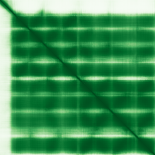
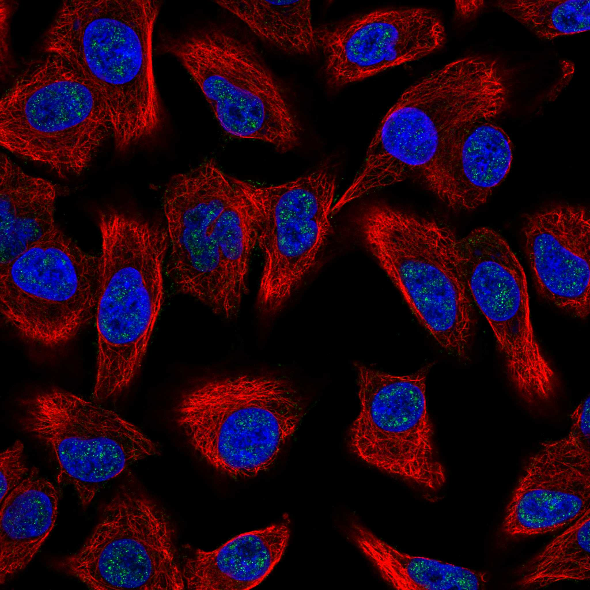
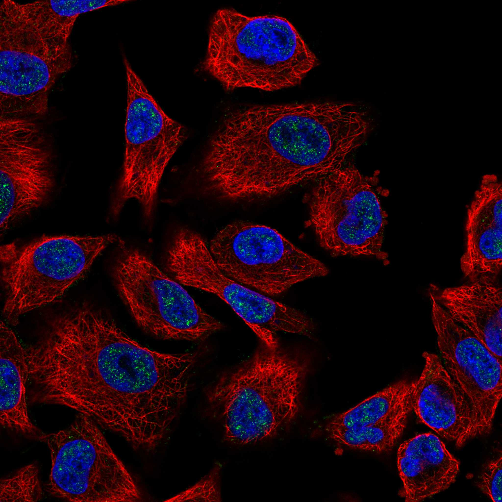

type: protein-evaluation gene: "MYADM" date: 2026-06-01 tags: [protein-scout, nuclear-speckle, evaluation] status: scored ---
MYADM Nuclear Speckle 蛋白评估报告
1. 基本信息
| 项目 | 内容 |
|---|---|
| 基因名 | MYADM |
| 蛋白全名 | Myeloid-associated differentiation marker |
| 蛋白大小 | 322 aa / 35.3 kDa |
| UniProt ID | Q96S97 |
2. 评分总览
| 维度 | 得分 | 新权重 | 加权后 | 关键证据摘要 |
|---|---|---|---|---|
| 核定位特异性 | 7/10 | ×4 | 28.0 | HPA: Nuclear speckles Approved; UniProt: Membrane (ECO:0000305), GO-CC 以膜/连接为主 |
| 蛋白大小 | 8/10 | ×1 | 8.0 | 322 aa, 35.3 kDa |
| 研究新颖性 | 6/10 | ×5 | 40.0 | PubMed strict=41, broad=51 |
| 三维结构 | 7/10 | ×3 | 21.0 | AlphaFold pLDDT 85.7; pLDDT >90 59.6%; 无 PDB 结构 |

| 调控结构域 | 5/10 | ×2 | 10.0 | MARVEL domain (IPR008253); 跨膜蛋白家族 | ||
| PPI 网络 | 6/10 | ×3 | 18.0 | UniProt 13 interactors; STRING 以 textmining 为主; IntAct coIP + Y2H | ||
| 加权总分 | 115/180** | 125.0/180 | ||||
| 互证加分 | +1.0 | HPA Approved nuclear speckle 定位; UniProt/IntAct 多源 interactor 重叠 | ||||
| 归一化总分 (÷1.83) | 62.8/100** | 68.9/100 |
3. 详细分析
3.1 核定位证据
| 来源 | 定位 | 可信度 |
|---|---|---|
| UniProt | Membrane (ECO:0000305) | Predicted |
| GO-CC | cell-cell junction IDA; cortical actin cytoskeleton IDA; membrane raft IDA; plasma membrane IDA; ruffle IDA | Experimental |
| Protein Atlas (IF) | Nuclear speckles (Approved) | Approved |
HPA IF 状态: IF available (Approved reliability) — HPA 定位为 Nuclear speckles，获 Approved 认证。UniProt 主定位为膜蛋白，但 HPA IF 提供了细胞水平的核定位证据。两者看似矛盾，但 MYADM 可能在特定条件下发生核转位或与核膜/核基质关联。Nuclear speckle 定位使其成为有意义的核候选。
3.2 结构与结构域
| 指标 | 数值 |
|---|---|
| AlphaFold | AF-Q96S97-F1 |
| 平均 pLDDT | 85.7 |
| pLDDT >90 | 59.6% |
| pLDDT 70-90 | 27.3% |
| pLDDT <50 | 8.4% |
| PDB | 无 |
| InterPro | IPR008253, IPR047123 |
| Pfam | PF01284 |
AlphaFold PAE 状态: PAE 已下载，见上图。结构整体置信度高（pLDDT 85.7），大部分区域折叠可靠。
3.3 研究现状
| 指标 | 数值 |
|---|---|
| PubMed strict (Title/Abstract) | 41 |
| PubMed broad | 51 |
关键文献聚焦于 MYADM 在肿瘤转移中的作用（PMID:40882023, RhoA-mediated ameboid migration）、髓系分化标记功能（PMID:16172915）、作为病毒进入宿主因子（PMID:37002207）、EMT 预后标记（PMID:39247591）及肺动脉高压血管重塑（PMID:32373233）。研究热度中等，仍有机制空白。
3.4 PPI 网络（三源综合）
| Partner | Source | Score/Evidence | Relevance |
|---|---|---|---|
| ARF6 | UniProt | 2 experiments | Vesicle/membrane trafficking |
| ARF6 | STRING | 0.451 (exp 0.430) | Vesicle/membrane trafficking |
| CFTR | UniProt | 3 experiments | Ion channel |
| CD79A | UniProt | 3 experiments | B-cell signaling |
| PLP1 | UniProt/IntAct | 3 experiments / validated Y2H | Myelin protein |
| F11R | UniProt/IntAct | 3 experiments / Y2H prey pooling | Tight junction |
| MUC1 | UniProt/IntAct | 3 experiments / validated Y2H | Mucin, tumor marker |
| CD7 | IntAct | anti tag coIP (PMID:28514442) | T-cell signaling |
| ESR1 | IntAct | tandem affinity purification (PMID:31527615) | Nuclear receptor |
| TGFBR2 | IntAct | anti tag coIP (PMID:28514442) | TGF-beta signaling |
| IL1R2 | IntAct | anti tag coIP (PMID:28514442) | Inflammatory signaling |
PPI 网络主要指向膜运输、免疫信号和细胞连接，但也涉及 ESR1（核受体）和 TGFBR2（可入核的受体）。无经典核蛋白互作模式。
4. 总体评价
MYADM 是一个有趣的矛盾案例：UniProt 和 GO-CC 主要支持其为膜/连接蛋白，但 HPA IF 给出 Approved 级别的 Nuclear speckle 定位。这种跨区室定位可能反映条件依赖的核转运或核膜关联。蛋白小（35.3 kDa）、结构置信度高、研究量适中，值得作为 nuclear speckle 候选继续追踪。建议进一步核查 HPA IF 原图，确认 nuclear speckle 信号的可靠性。
5. 数据来源
- UniProt: https://www.uniprot.org/uniprotkb/Q96S97
- AlphaFold: https://alphafold.ebi.ac.uk/entry/Q96S97
- PubMed: https://pubmed.ncbi.nlm.nih.gov/?term=MYADM
- Protein Atlas: https://www.proteinatlas.org/ENSG00000179820-MYADM


HPA IF 状态: HPA IF 图像已本地嵌入。
PAE 图像说明: AlphaFold PAE 图像已重新获取并嵌入（见下方 PAE 图像修正块）；结构判断仍结合 pLDDT 与 PAE 综合判断。
<!-- AF_PAE_REPAIR_START --> PAE 图像修正（2026-06-05）: AlphaFold 提供 predicted aligned error 图像；此前“PAE 图像暂无数据”的表述为未获取/未嵌入导致。